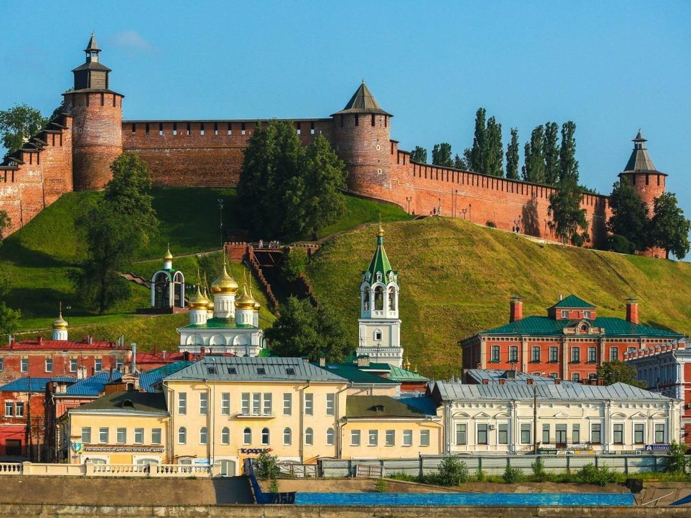
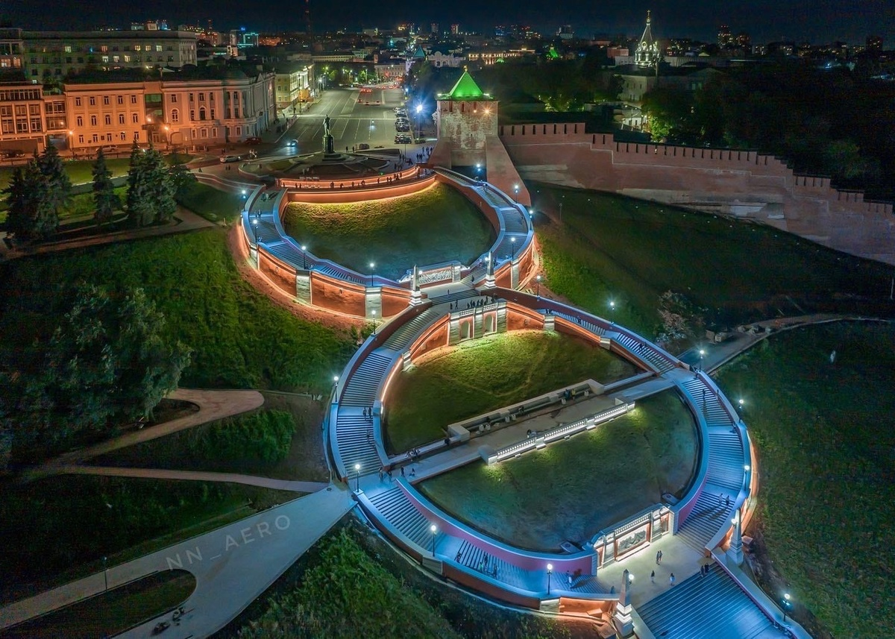
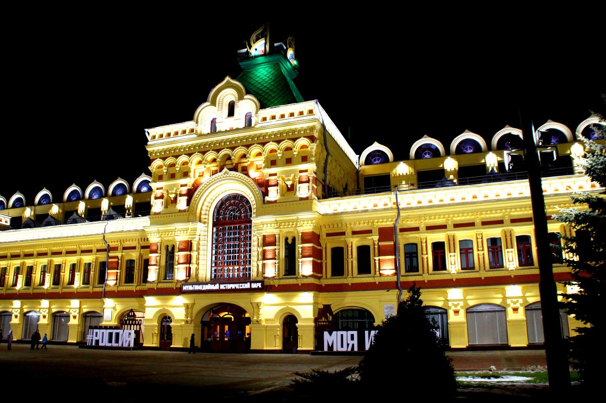
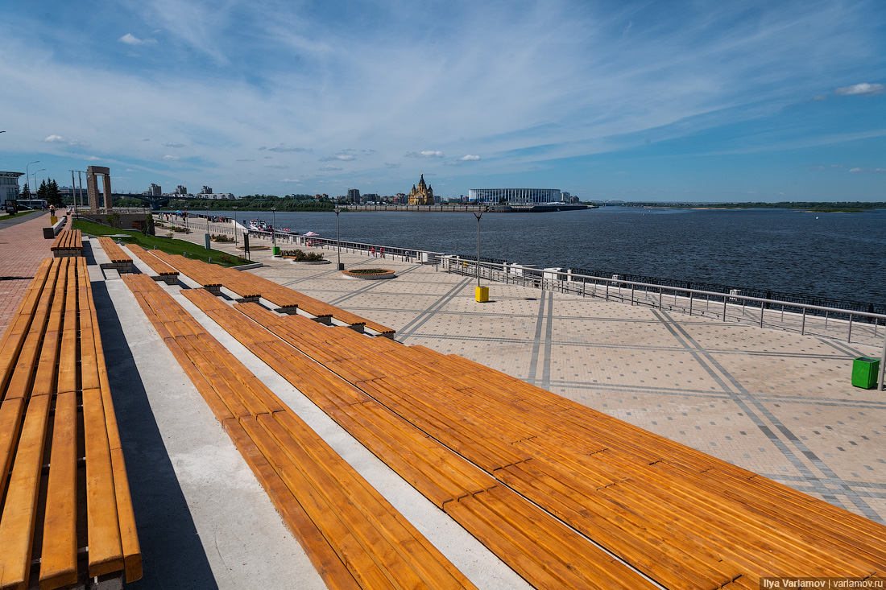
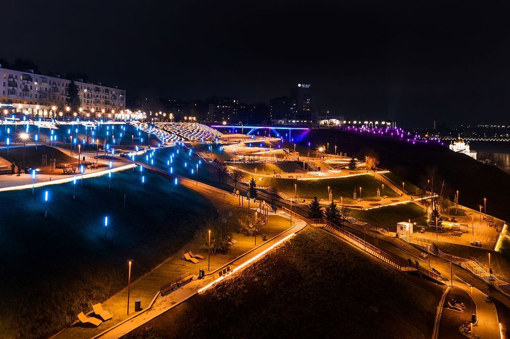
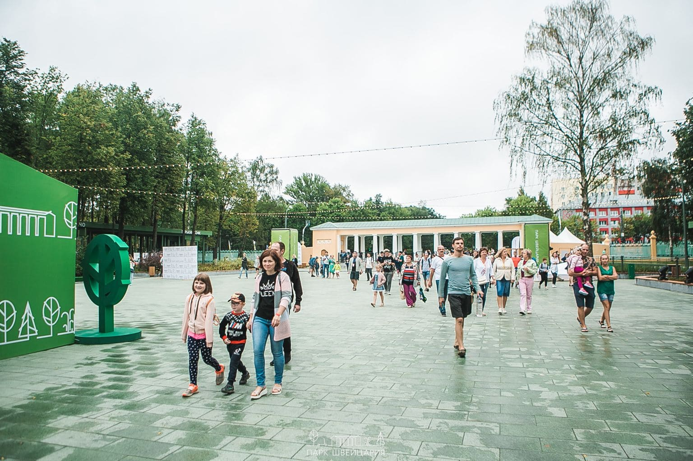
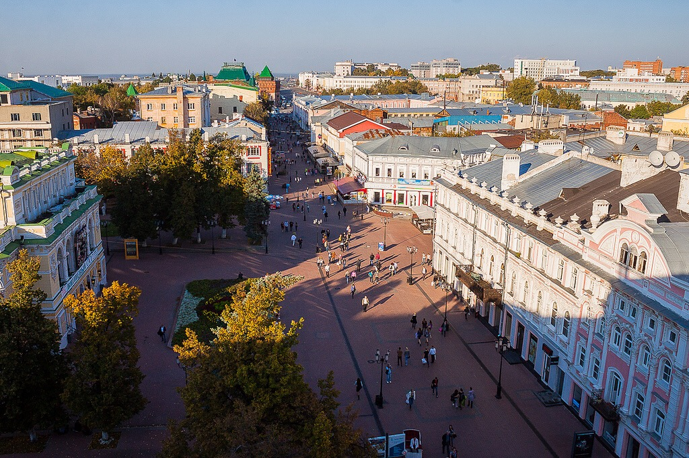
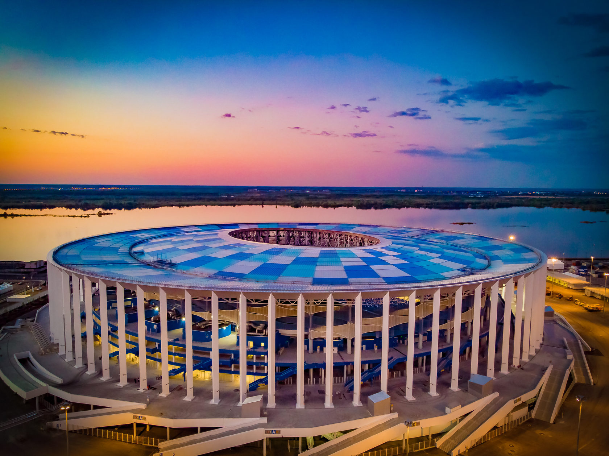

Нижегородский Кремль
Нижегородский кремль — сердце города над слиянием Оки и Волги, двух великих рек. Величественная средневековая крепость, одна из лучших в России по степени сохранности. Главная достопримечательность и видовая точка города за счет уникального и неповторимого рельефа. Входит в число наиболее ценных архитектурных памятников России.
Насчитывает 6 ворот и 13 башен:
Дмитриевская, Кладовая, Никольская, Коромыслова, Тайницкая, Северная, Часовая, Ивановская, Белая, Зачатская, Борисоглебовская, Георгиевская, Пороховаябашня башни

Чкаловская лестница
Чкаловская лестница – интереснейший культурный объект Нижнего Новгорода. Начинаясь великолепной восьмеркой от памятника Валерию Чкалову, она ковровой дорожкой спускается к реке, где стоит катер «Герой». Удачное расположение и необычная форма лестницы делают ее одной из главных достопримечательностей города, хотя построена она была не так давно – в середине XX века.
Построена в виде восьмёрки и состоит из 560 ступеней, если считать обе стороны «восьмёрки».

Нижегородская ярмарка
Современный выставочный комплекс с многолетним опытом проведения федеральных событий в области цифровизации, промышленности, развития городской среды, креативных технологий, искусства.

Нижне-Волжская набережная
Нижне-Волжская набережная — одна из самых протяженных улиц в центре Нижнего Новгорода. Сегодня это живописное место времяпрепровождения для жителей города и туристов, сочетающее комфортную зону для прогулок и музей под открытым небом, сохранивший свой исторический облик. На Нижне-Волжской набережной регулярно организуются городские праздники, развлекательные мероприятия и концерты.

Набережная Федоровского
Набережная Федоровского, или как ее еще называют «Верхне-Окская», считается лучшей смотровой площадкой по мнению жителей и гостей города Нижний Новгород.
С набережной прекрасно видно всё: и старый город, и речной вокзал с парком, Канавинский мост — один из старейших в городе и, конечно же, противоположный берег реки Оки — Собор Александра Невского, стрелку Оки и Волги. Многие приходят сюда полюбоваться закатом. Также прогуливаясь вдоль набережной, можно увидеть зеленые склоны и Нижне-Волжскую набережную.

Парк Швейцария
Парк «Швейцария» — парк культуры и отдыха, является крупнейшим в Нижнем Новгороде. Его протяжённость составляет 3,5 км, площадь — 380 га. Входит в перечень объектов культурного наследия Нижегородской области.

Большая Покровская улица
Большая Покро́вская улица — главная улица Нижнего Новгорода. Расположена в историческом центре города. Связывает 4 площади: Минина и Пожарского, Театральную, Горького и Лядова. Одна из самых старинных улиц.

Стадион Нижний Новгород
«Нижний Новгород» — футбольный стадион международного класса. Расположен на Стрелке — месте впадения реки Оки в Волгу. Является домашней ареной футбольного клуба «Пари Нижний Новгород» и используется в качестве многофункционального спортивного комплекса. В рамках чемпионата мира по футболу 2018 года здесь прошли 4 матча группового этапа, матч 1/8 финала и четвертьфинал.
Вместимость стадиона составляет 45 000 мест, в том числе 902 места для маломобильных групп населения вместе с сопровождающими.